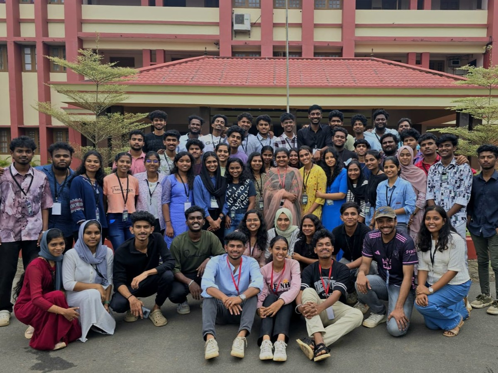
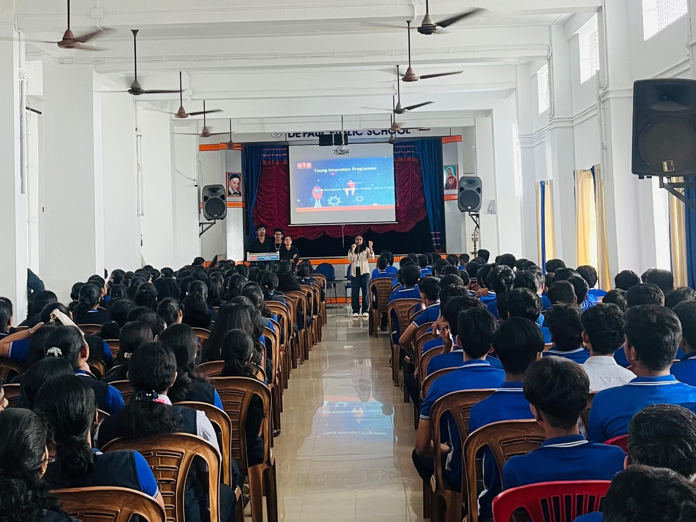
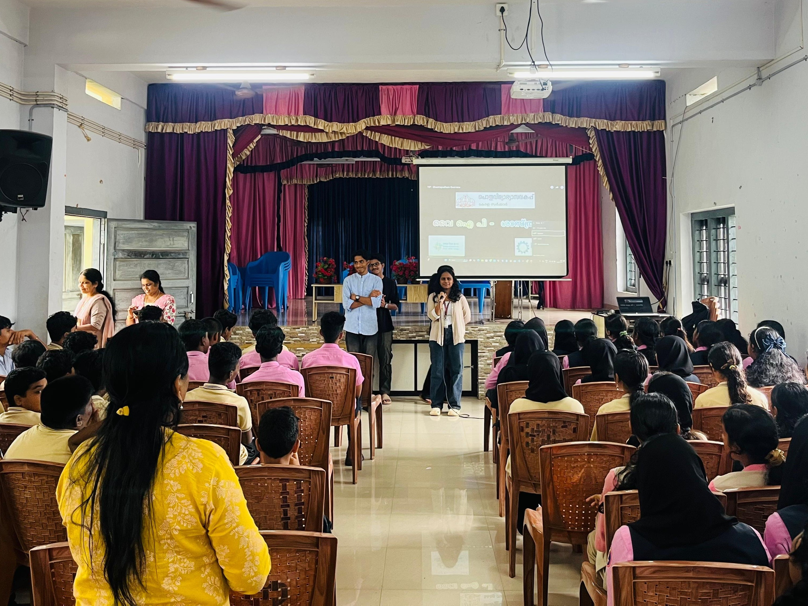

- Problem
- Real estate information can be difficult to explore when property details, images, pricing, and location information are not presented in a clear and organized way.
- Solution
- Created a modern, responsive real estate website that organizes property information into an easy-to-browse interface and provides a simple way for potential buyers to make enquiries.
- Technology
- Mern Stack, Responsive Web Design, Git, GitHub
- My contribution
- Designed and developed the website interface, structured property content, implemented responsive layouts, and created a smooth property browsing and enquiry experience.
- Challenge
- Creating a responsive and visually consistent layout while presenting different property details, images, pricing, and location information clearly across different screen sizes.
- Result
- Delivered a professional and user-friendly online presence for TerraNova Real Estate, making property information easier to explore and helping potential buyers connect through enquiries.
- Learning
- Gained practical experience in real-world website development, responsive design, content organization, client-focused design, and building interfaces around actual business requirements.
b.tech cse — expected march 2027
I build interfaces,
solve problems,
and keep learning.
B.Tech CSE · Aspiring Front-End Developer · 2027
CSE student focused on front-end development, with hands-on experience in HTML, CSS and JavaScript, basic React knowledge, real-world projects, freelance collaboration and technical internship exposure.
Open to technical internships & entry-level developer roles · 2027
Core
HTML · CSS · JavaScript
Currently developing
React.js
Experience
Projects · Freelance · Technical internship
Foundation
B.Tech CSE · 2027
01
About
Building my foundation through real projects.
I'm a B.Tech Computer Science & Engineering student graduating in March 2027, with a strong interest in web development and front-end engineering. My strongest technical foundation is in HTML, CSS and JavaScript, and I'm currently developing my skills in React.js. Instead of limiting my learning to coursework, I apply concepts through projects and freelance work.
I've also completed a technical internship at the Idukki Collectorate, giving me exposure to a professional working environment. Alongside technology, my involvement in μLearn, TinkerHub, NSS, YIP and other initiatives has strengthened my communication, coordination and leadership skills.
02
Technical foundation
What I work with.
Core
- HTML5
- CSS3
- JavaScript
Familiar
- React — components, props, state and component-based UI
- Git & GitHub
- VS Code
Academic
- C
- C++
- Java
I keep this list honest — categories reflect real comfort level, not arbitrary percentages.
03
Projects
Things I've built.
Proof of what I can build — each one below follows the same thread: problem, solution, and what I'd change next time.
- Problem
- Managing freelance jobs, client details, project progress, and payments can become difficult when information is scattered across different places.
- Solution
- Built a freelance job management application that organizes projects, clients, and job-related information in one place for easier tracking and management
- Technology
- Flutter, Firebase, Firestore, Firebase Authentication
- My contribution
- Designed and developed the application interface and core job-management functionality, including project and client data handling and user interaction flows.
- Challenge
- Designing a simple workflow for managing multiple jobs while keeping project data organized and easily accessible.
- Result
- Created a centralized application for organizing and tracking freelance work, making job management more structured and convenient.
- Learning
- Gained practical experience in Flutter application development, Firebase integration, database management, and building user-focused application workflows.
- Problem
- Students often need a simple way to practice and test their understanding of OOP concepts outside regular study sessions.
- Solution
- Built an interactive quiz website that presents OOP questions, allows users to select answers, and provides instant feedback to support self-assessment.
- Technology
- HTML5, CSS3, JavaScript
- My contribution
- Designed and developed the quiz interface, question flow, answer selection, feedback logic, and score tracking.
- Challenge
- Implementing the quiz logic and dynamic question handling while keeping the interface simple and easy to use.
- Result
- Created an interactive learning tool that enables users to practice OOP concepts and immediately evaluate their answers.
- Learning
- Strengthened my understanding of JavaScript logic, DOM manipulation, event handling, and interactive UI development.
04
GitHub
Code behind the projects.
guess-the-color-game
[Interactive color guessing game where users identify the correct color from RGB values, with multiple difficulty levels, dynamic gameplay, and score tracking.
bulb-game
Interactive bulb control game where users interact with a virtual bulb through dynamic controls and visual feedback.
text-to-voice
Interactive text-to-voice web application that converts written text into natural speech with simple controls for an accessible and user-friendly experience.
05
Experience
Technical internship.
Completed a technical internship at the Idukki Collectorate, gaining practical exposure to technical work within a professional government organization and understanding how technology and technical responsibilities operate in a real environment.
Freelance development.
Worked collaboratively with friends on freelance projects, translating requirements into functional websites and gaining practical exposure to development workflows, communication, deadlines and project delivery.
ProjectRoleTechnologyContributionResult
TerraNova Real Estate
Freelance Web Developer & Project Partner
WordPress, WPBakery, Responsive Web Design, Git, GitHub
Created a modern, responsive real estate website that organizes property information into an easy-to-browse interface and provides a simple way for potential buyers to make enquiries.
Successfully delivered a modern, responsive real estate website that presents property information in a clear, easy-to-browse format and provides potential buyers with a convenient property enquiry experience.
06
Approach
How I approach problems.
- 01Understand
- 02Explore
- 03Build
- 04Test & debug
- 05Improve
I break requirements into smaller problems, compare possible approaches, implement and test, debug issues systematically, then reflect and improve.
07
Leadership
Where I've taken ownership.
μLearn — Content Lead
Contributed as Content Lead, coordinating content-related activities and working with team members.
μLearn — Programs
Organized and coordinated multiple programs and initiatives, including [Level Hunt / Karma Hunt activities — replace with your actual roles and responsibilities].
TinkerHub GECI — Outreach 2025–2026
Worked in outreach, engaging students and technical communities.
NSS — NPRF Flagship Lead 2025–2026
Took a leadership role in coordinating and executing the initiative.
YIP Student Awareness Intern
Conducted awareness sessions for students about the Young Innovators Programme, encouraging them to submit innovative ideas and helping them understand the government support and guidance available through the programme.
08
Communication
I can explain what I build.
Conducted sessions for students from different colleges, hosted programs and interacted with communities with different levels of technical knowledge.
09
Beyond the screen
Strong with people. Comfortable with technology.
I enjoy connecting with people across different backgrounds, personalities, attitudes and levels of knowledge. Participation in different camps and community environments has helped me adapt my communication style, listen to different perspectives and work comfortably with different kinds of people.



Comfortable behind the screen. Comfortable behind the microphone.
10
Currently learning
The stack is still growing.
HTML
→
CSS
→
JavaScript
→
React.js
→
Modern front-end dev
→
Stronger software engineering
11
CSE foundation
The fundamentals behind the code.
12
Education
B.Tech Computer Science & Engineering
Government Engineering College Idukki · Expected graduation March 2027
why me
I may be graduating in 2027.
I'm already building for what's next.
Projects gave me practice. Internship gave me exposure. Freelancing gave me real requirements. Leadership gave me responsibility. Communities gave me perspective. CSE gave me the foundation to keep going.
Build
I apply concepts through projects instead of stopping at theory.
Foundation
My strongest areas are HTML, CSS and JavaScript, while React is an active learning area.
Real-world exposure
Technical internship and freelance work have introduced me to practical requirements and collaboration.
Communication
Leadership, outreach, sessions and hosting have strengthened my ability to explain ideas and work with people.
Ownership
I've repeatedly stepped into roles requiring coordination and responsibility.
Learning
My technical stack is continuously evolving.
Have a technical challenge?
Let's talk.
I'm graduating in March 2027 and looking for an opportunity to begin my professional journey in software and web development.